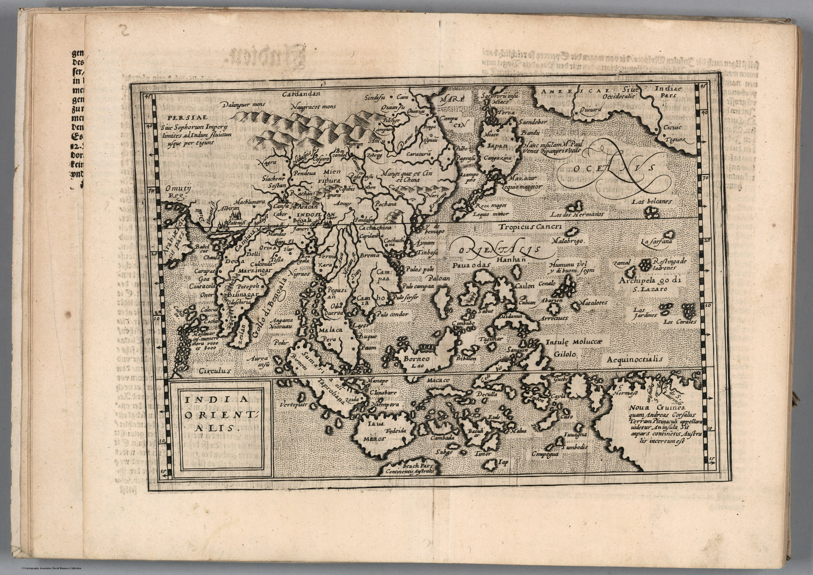

Click to enlargeA smaller atlas
Quad worked at Cologne and produced maps at a scale and price below the great folio atlases of Ortelius and Mercator. His Geographisch Handtbuch of 1600 presented geography in German and in a format suited to readers who could not acquire an elaborate Antwerp atlas.
Derivative geography
The map’s importance does not lie in new measurement. Its East Indies descend from established late-sixteenth-century models, compressed into a smaller plate. Reduction required selection: coastlines, principal names and decorative cues preserved while detail was sacrificed.
Circulation as historical evidence
Copies and derivatives reveal how cartographic images became authoritative. A geography first assembled for expensive international atlases could be republished in Cologne, translated into a vernacular setting and carried by a much broader readership.
The gaze
India is now reproducible. The European picture of the East no longer depends only on rare charts or courtly books; it becomes a portable commodity. Standardisation, repetition and affordability are themselves forms of power over how distant places are imagined.